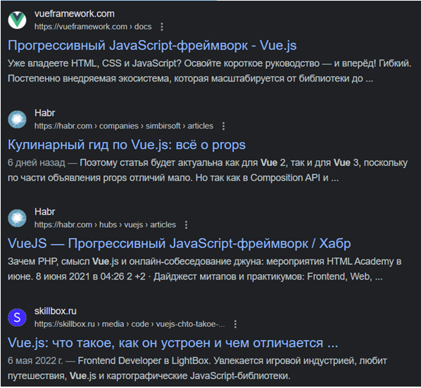

Задача 1. Вводимо логіна і пароль. Якщо логін вірний відображаємо
смайл. Якщо ні, то:
1. якщо логін = Іван – колір повідомлення про помилку синій
2. якщо хтось інший, то колір повідомлення червоний
1. якщо логін = Іван – колір повідомлення про помилку синій
2. якщо хтось інший, то колір повідомлення червоний
Задача 2. З випадаючого списку вибираємо клас квитка у літаку. Якщо
1. бізнес - виводимо елементи для вибору газети та коньяку (якщо вибрано коньяк, то запропонувати закуску (так/ні)), на фоні зображення бізнес кают
2. економ – виводимо елементи для вибору типу пива і чипсів, на фоні хмарки.
1. бізнес - виводимо елементи для вибору газети та коньяку (якщо вибрано коньяк, то запропонувати закуску (так/ні)), на фоні зображення бізнес кают
2. економ – виводимо елементи для вибору типу пива і чипсів, на фоні хмарки.
Задача 3. Елемент тренажера англійської. Виводимо зображення елемента
і слово. Користувач вводить відповідь. Якщо вірно – відтворюємо фразу
«Добре. Молодець!» (і додаємо зелену рамку до елемента), якщо ні - то
відтворюємо фразу «Невірно, спробуйте ще раз» (і додаємо червону
рамку).
4. Вивести список як маркований список з елементами у форматі (name:
salary)
Задача 5. Самостійно сформуйте масив даних та виведіть фрагмент на
зразок поданого (дані не обов’язково повинні співпадати)

Задача 6. Задача. На кухню поступають замовлення. Спочатку ми додаємо
їх у список “Очікують на виконання”, якщо повар береться робити —
замовлення переходить у список “Виконуються”, якщо замовлення виконано
— переходить у список “Готові до виносу”. Якщо натиснути на “Подано” -
страва зникає з таблиці